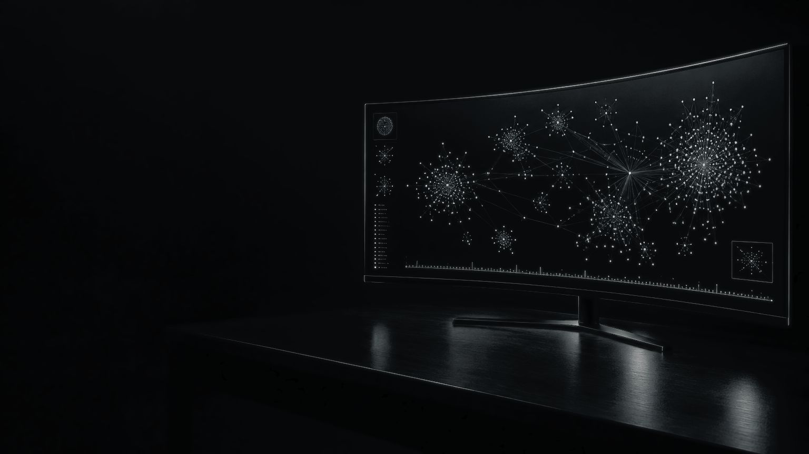
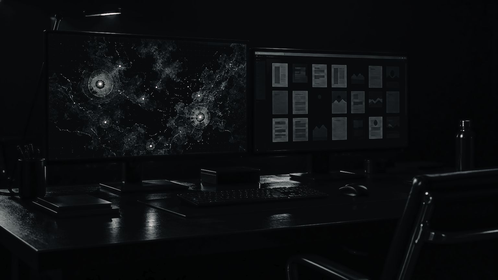

ELZA
Видеть связи. Понимать события
Политические решения влияют на рынки, технологии меняют отрасли, состояние инфраструктуры отражается на целых регионах.
ELZA собирает публикации, статистику, документы и наблюдения в обновляемую картину событий, участников и факторов. Ее можно исследовать и проверять.

Что происходит и почему
Шесть инструментов аналитикаПользователь видит подтверждения, противоречия и пробелы в данных — и понимает, какая новая информация изменит оценку.
Для вас и вашей команды
Три способа работать с платформойВозможности
Понятные выводы, проверяемые источникиОт значимого вывода можно перейти к исходным материалам и проверить, на чем основан анализ.
Факты, предположения и сценарии обозначены отдельно. Противоречия остаются на виду.
События изучаются по месту и времени: видно, как развивалась ситуация.
ИИ сравнивает материалы и ищет противоречия. Основания выводов остаются доступны для проверки.
Запросить презентацию
Расскажите о задаче — подготовим материалы под ваш сценарий. Подробности передаются после соглашения о конфиденциальности.
Ответ в течение двух рабочих дней.